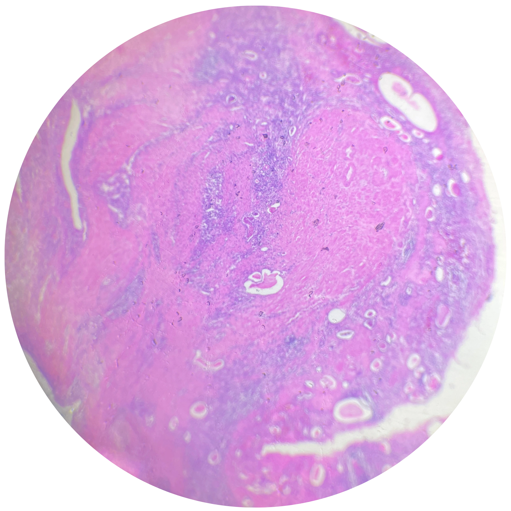

Lámina F01 · IMAGEN 1/6PATOLOGÍA 01 / 05

1 / 6
PATOLOGÍA F01 · Lámina F01
Órgano
Riñón
Proceso
Inflamación crónica
Descripción
- Glomérulos esclerosados
- Fibrosis periglomerular e intersticial
- Atrofia tubular
- Tiroidización
- Infiltrado linfocitario
- Hemorragia
- Angiogénesis
Diagnóstico
Pielonefritis crónica